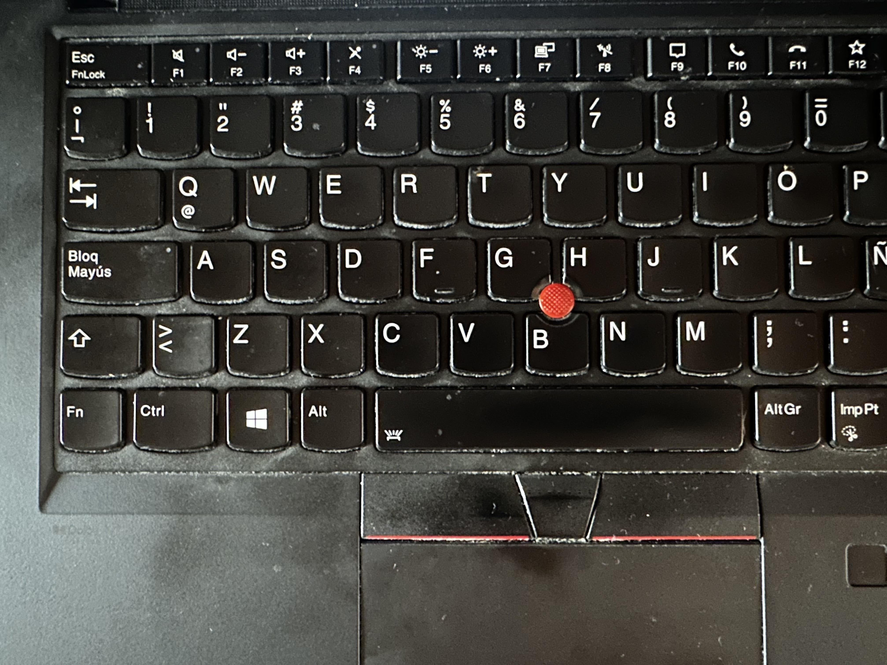

17-07-2026
By Sofia Maldonado
This week I changed my laptop from a Lenovo Ideapad 3 to a Lenovo ThinkPad, specifically a T14 Gen 2 ThinkPad. These are just some scattered thoughts after less than 24 hours of owning it. But first, a quick story on how this machine actually got into my hands.
The "new" in the title is kind of misleading. This is a 5 year old machine that my dad had used for around 4 years. This was his work laptop. This year he had it changed, and his employer offered him to buy this older one for a fraction of its cost. Checking on MercadoLibre (the Latin American equivalent to eBay), he got it for a little less than a third of its used value, and that doesn't take into account the 16 additional gigs of RAM he installed on it a couple years ago before you could trade RAM for gold. And, compared to any random second hand vendor, I can trust that my own father has kept this in near-pristine condition. So this was a pretty incredible deal. I will mostly be comparing this computer to my previous laptop, which I used for around 2.5 years.
The build quality was what lured me to this new laptop the most. Since it is a ThinkPad, it was designed with business people in mind and it really shines. It is slightly lighter than my older laptop but it feels heftier in the hands, in a good way. Unlike the previous machine, I can open the hinge on this one with just my finger, a luxury that I've never had in any previous laptop, that I am already loving.
My previous machine was fine but what I always had issues with was the screen: it was 15 inches but it barely got bright and looked downright bad from many angles: I had to look at it straight on for it to be decent. This screen is smaller at 14 inches but it is the same resolution (1920x1080) so it looks sharper. The screen gets way, way, way brighter (in my testing, around 6% brightness here is equivalen to 45% on the older one) and it looks significantly better from angles. I am actually planning to watch a lot more movies and TV shows on this machine now, something that I dreaded on my older one.
I actually really liked the keyboard on my older machine, but I like this one much better. Since this has a smaller screen it also has a smaller keyboard, just something I will need to get used to. And the keys feel lovely to press, especially in slightly longer writing sessions like this one. What I haven't gotten used to yet is the placement of some of the keys. The bottom row speaks for itself:

Having the Print Screen key at the bottom is crazy, and the Ctrl key placement especially irks me. I am scared of the time it will take me to get used to, since I also use a keyboard from my desktop with the more standard layout for these keys. I know I will get used to it eventually, and will be able to switch gracefully from one layout to the other, but it will not be a smooth transition.
This is a ThinkPad so it has the infamous nub (or clitoris if you are feeling fancy) that all ThinkPads have. I have avoided it for now but I notice that my hand sometimes naturally gravitates to it. One advantage the track-pad does have is that my dad actually liked using the pointing stick, so the track-pad still feels brand new.
The audio and microphones are something I don't really care for on a laptop (I can count the number of times I legitimately used my previous laptop's speakers on one hand) since I usually use my wireless headphones anyway but they are slightly better according to my ears.
The only thing that is noticeably worse on this laptop compared to my older one is the webcam, but I also barely use it so it does't worry me too much.
As I stated above, I wasn't really looking for performance gains with this transition, and so far it has really felt same-y. My older machine had a Ryzen 7 5700U. This new one has an Intel Core i5-1145G7. This is actually the first machine with an Intel chip I've used since late 2020, when I retired the 2012 iMac I was using in exchange for my current desktop rig. Looking at benchmarks online, it seems this ThinkPad has slightly better single core performance but is worse in multi-core. I never really pushed my older laptop to its limits CPU-wise so I am not too worried. Most of what I do is single-threaded work.
Where this machine outshines my older one is RAM: this has 32 GB compared to 16 on my previous one, so I will be able to load bigger local models onto it which is exciting as a data science student.
For now, I feel like this is laptop has slightly better battery life. I will definitely need to do more extended testing to corroborate this (including actually taking it out of my room), but I haven't charged it once since setting it up and have been using it pretty consistently. A perk of ThinkPads is that they have much better drivers for specific hardware features on Linux. This means I can finally use TLP, which I couldn't use on my previous laptop. Now, when my battery reaches 80%, it stops charging and just uses the energy from the wall to work. Overtime this will make my battery health much better and will work fine for much longer, something very important from a second hand machine.
That is all I have for now. I am very impressed by this machine so far and I plan to use it for many years to come. This laptop in particular had always eluded me, seeing my dad use it, and to be able to actually use it and call it my own is kind of magical. And like I said above, this machine is very open to Linux, more than my previous laptop. See you soon!